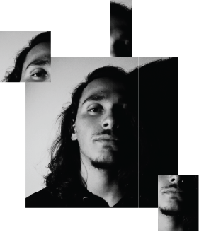

O Limite na sua contranatura é ilimitado.
Pensar Limites é pensar na sua conotação
redutora, opositora e opressiva ao progresso.
Ainda assim, todas as regras limitantes, todas as
conformidades e normas apenas existentes na
imaginação coletiva, permitem e asseguram a
ordem.
Mas será a ordem a maior limitadora da arte ?
Possivelmente! No entanto, a ordem (que implica a existência de desordem) é também a sua
maior impulsionadora.
É esta ambiguidade paradoxal que permite que
a pintura termine nas arestas da tela, ou então,
que se alastre pelas paredes e fissuras, até que
conheça os Limites do seu criador.
Falar Limites, é conhecer o poder e o dever,
mas é também conhecer o imperfeito, o defeito
e o humano. É sobretudo conhecer a arte, a cultura e o ser.
José Moreira
Os Limites estabelecem, obrigatoriamente, barreiras no que toca à criatividade e à imaginação.
Gosto de pensar que, sempre que possível fujo desta realidade tão crua e limitadora, seja no simples processo de pensar até às origens da criatividade.
A partir do momento que existem entraves, está a ser limitado o potencial absoluto de um resultado final.
A cargo da evolução humana, o inconsciente e ganância pelo poder veio depo-
sitando Limites resultantes do medo, receios, ansiedades.
Qual é a solução para que isso não aconteça? Como é que desbloqueamos o “full potential” da nossa imaginação?
A humanidade vem desde início ensinar o medo através da falta de conhecimento. Portanto...aí está a resposta! Contudo, o processo é bem mais complexo do que adquirir conhecimento.

Gonçalo Mota
Dédalo avisou, mas assim o fazemos.
Desafiamos os nossos limites desde
que largamos o atributo de andar
com os quatro membros. De instrumentos de caça a máquinas industriais monstruosas, da capacidade de
troca a sistemas económicos complexos e de pequenas sociedades a
gigantescas selvas de cimento que
ultrapassam a linha dos céus. No
entanto, continuamos a voar mais
alto, agindo como se o mundo fosse
nosso, ultrapassando fronteiras,
criando conflitos imaginários e
destruindo o mundo que gentilmente nos acolhe.
E como Ícaros caíremos.
.jpg)
.jpg)
.jpg)
.jpg)
.jpg)
.jpg)
.jpg)
.jpg)